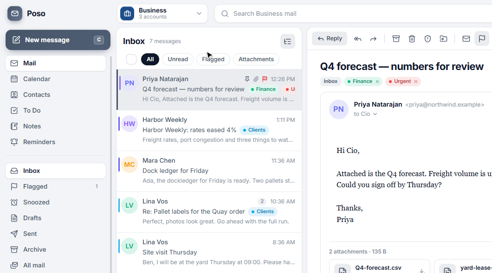

Poso · post, in Sesotho
All your inboxes.Neatly kept apart.
A Windows mail client for work and home. Search, spam, rules, and the From menu stay inside the session you picked. The mail stays on this computer.

Business session. A colored bar on each row shows which address received the mail.
The tools you use every day
One list for every account in the session, and the actions you reach for without leaving the message.
Sessions
Business and Personal start empty. Switch the whole workspace in one click.
Rich mail
HTML and CSS in a sandbox. Remote images stay blocked until you allow them.
Search
Full text, plus from, subject, label, attachment, and date operators.
Rules
From, subject, or account can label, archive, flag, or file as spam.
Snooze and pin
Hide a thread until later, or keep the one you need at the top.
Write and send later
Rich text, signatures, undo send, and a message that waits until the time you chose.
Spam
Provider junk, a blocklist, and a local filter trained from what you mark.
Audit log
Sends, moves, deletes, and imports, with CSV and JSON export. Passwords are never in it.
More than the inbox
Calendar, contacts, to-dos, notes, and reminders belong to the session you are in. Switch them with Alt+1 through Alt+6.
MailConversations, folders, labels, and a reading pane on the right, the bottom, or off.
CalendarMonth and agenda, with alerts that still show if Poso was closed.
ContactsTaken from mail you already have, and offered while you compose.
To DoMy Day, Important, and Planned, with a due time.
NotesAutosave, pin, and color. They stay with the session.
RemindersRepeat, snooze, and a notification with the Poso logo.
Use the address you already have
Gmail and Outlook sign in through the browser. Yahoo, iCloud, and any other IMAP server use an app password. Passwords go to Windows Credential Manager, not the audit log.
Gmail
Outlook / Microsoft 365
Yahoo
iCloud
Any IMAP server
Two inboxes. One window.
The first launch creates Business and Personal, both empty. Name them, add another, and put each account in one session. Nothing is mixed until you put it there.
Work stays at workSearch and spam in Business never show the personal accounts.
Home stays at homeThe compose From menu only lists addresses in the session you are viewing.
Switch in placeThe header menu, or Ctrl+1 through Ctrl+9, swaps the whole workspace.
Sample mail is optionalTry the window without a server, then remove the sample without touching real mail or its audit rows.
Every feature
The same pieces other mail clients put up front: read, file, write, search, then the rest of the desk. Pick one.
Download
Windows, Android, and Linux. Each button downloads that file from the latest GitHub release.
Windows
Installer
The desktop app for this PC. Mail stays in a local mailbox.
Download for Windows Poso.Setup.exeAndroid
Phone
Install the APK on the phone. It is the Android build from the same release.
Download for Android Poso.apkLinux
AppImage
One file you can run on most Linux desktops, from the same release.
Download for Linux Poso.AppImageThe files have to be attached to the latest release of ktsoaela/poso under those exact names. Setup notes are in the guide.